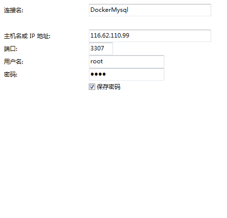
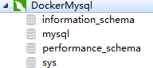

v /usr/local/docker/mysql/conf:/etc/mysql：将主机当前目录下的 conf 挂载到容器的 /etc/mysql
v /usr/local/docker/mysql/logs:/var/log/mysql：将主机当前目录下的 logs 目录挂载到容器的 /var/log/mysql
v /usr/local/docker/mysql/data:/var/lib/mysql：将主机当前目录下的 data 目录挂载到容器的 /var/lib/mysql
e MYSQL_ROOT_PASSWORD=root：初始化 root 用户的密码
d 守护态运行
ECS服务器开放端口
3306-3316开放10个端口供给docker容器使用
查看容器启动情况
1 2 3 4 5 6 7
➜ ~ sudo docker ps CONTAINER ID IMAGE COMMAND CREATED STATUS PORTS NAMES f352fd16f729 mysql:5.7.22 "docker-entrypoint.s…" 14 seconds ago Up 13 seconds 0.0.0.0:3307->3306/tcp mysql e74b9cc8e192 tomcat "catalina.sh run" 16 hours ago Up 16 hours 0.0.0.0:8084->8080/tcp volumeDemo1 a569649fcc5a tomcat "catalina.sh run" 17 hours ago Up 17 hours 0.0.0.0:8083->8080/tcp volumeDemo d53272c36764 tomcat "catalina.sh run" 19 hours ago Up 19 hours 0.0.0.0:8082->8080/tcp mytomcat2 849e5b576998 myproject "catalina.sh run" 23 hours ago Up 19 hours 0.0.0.0:8081->8080/tcp elastic_panini
使用客户端工具连接 MySQL
测试连接成功

查看数据库

查看docker目录下的文件
1 2 3 4 5 6 7 8 9 10 11 12 13 14 15
➜ docker ls mysql tomcat ➜ mysql ls conf data logs ➜ mysql conf ➜ conf ls ➜ conf cd .. ➜ mysql cd data ➜ data ls auto.cnf ib_buffer_pool performance_schema ca-key.pem ibdata1 private_key.pem ca.pem ib_logfile0 public_key.pem client-cert.pem ib_logfile1 server-cert.pem client-key.pem ibtmp1 server-key.pem f352fd16f729.pid mysql sys
➜ data sudo docker run -it --rm mysql:5.7.22 bash root@fc1072850e62:/# ➜ data sudo docker run -it --rm mysql:5.7.22 bash root@fc1072850e62:/# ls bin etc mnt sbin var boot home opt srv dev lib proc sys docker-entrypoint-initdb.d lib64 root tmp entrypoint.sh media run usr root@fc1072850e62:/# whereis mysql mysql: /usr/bin/mysql /usr/lib/mysql /etc/mysql /usr/share/mysql root@fc1072850e62:/# cd /etc/mysql/ root@fc1072850e62:/etc/mysql# ls conf.d my.cnf.fallback mysql.conf.d my.cnf mysql.cnf root@fc1072850e62:/etc/mysql# ll
# 查看配置文件 root@fc1072850e62:/etc/mysql# cd mysql.conf.d/ root@fc1072850e62:/etc/mysql/mysql.conf.d# ls mysqld.cnf root@fc1072850e62:/etc/mysql/mysql.conf.d# cat mysqld.cnf # 配置文件详细 [mysqld] pid-file = /var/run/mysqld/mysqld.pid socket = /var/run/mysqld/mysqld.sock datadir = /var/lib/mysql #log-error = /var/log/mysql/error.log # By default we only accept connections from localhost #bind-address = 127.0.0.1 # Disabling symbolic-links is recommended to prevent assorted security risks symbolic-links=0 root@fc1072850e62:/etc/mysql/mysql.conf.d#
➜ conf ls mysql ➜ conf cd mysql ➜ mysql ls conf.d my.cnf.fallback mysql.conf.d my.cnf mysql.cnf ➜ mysql # 删除mysql文件夹 ➜ conf sudo rm -fr mysql ➜ conf ls conf.d my.cnf.fallback mysql.conf.d my.cnf mysql.cnf # 退回上一级 ➜ conf cd .. # 停掉mysql容器
mysql sudo docker ps CONTAINER ID IMAGE COMMAND CREATED STATUS PORTS NAMES 2fbdec92f87a mysql:5.7.22 "docker-entrypoint.s…" 14 minutes ago Up 9 minutes 0.0.0.0:3307->3306/tcp mysql e74b9cc8e192 tomcat "catalina.sh run" 17 hours ago Up 17 hours 0.0.0.0:8084->8080/tcp volumeDemo1 a569649fcc5a tomcat "catalina.sh run" 17 hours ago Up 17 hours 0.0.0.0:8083->8080/tcp volumeDemo d53272c36764 tomcat "catalina.sh run" 20 hours ago Up 20 hours 0.0.0.0:8082->8080/tcp mytomcat2 849e5b576998 myproject "catalina.sh run" 24 hours ago Up 20 hours 0.0.0.0:8081->8080/tcp elastic_panini ➜ mysql sudo docker stop 2 2 ➜ mysql sudo docker rm 2 2